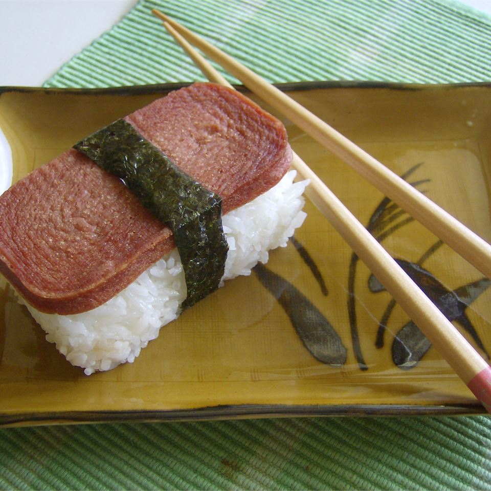

Spam Musubi

Description
Spam musubi is a popular snack made in Hawaii. It consists of a piece
of marinated cooked spam with rice wrapped with seaweed.
Ingredients
- 2 cups uncooked short-grain white rice
- 2 cups water
- 6 tablespoons rice vinegar
- 0.5 cup white sugar
- 0.25 cup soy sauce
- 0.25 cup oyster sauce
- 1(12 ounce) container fully cooked luncheon meat
- 2 tablespoons vegetable oil
- 5 sheets sushi nori(dry seaweed)